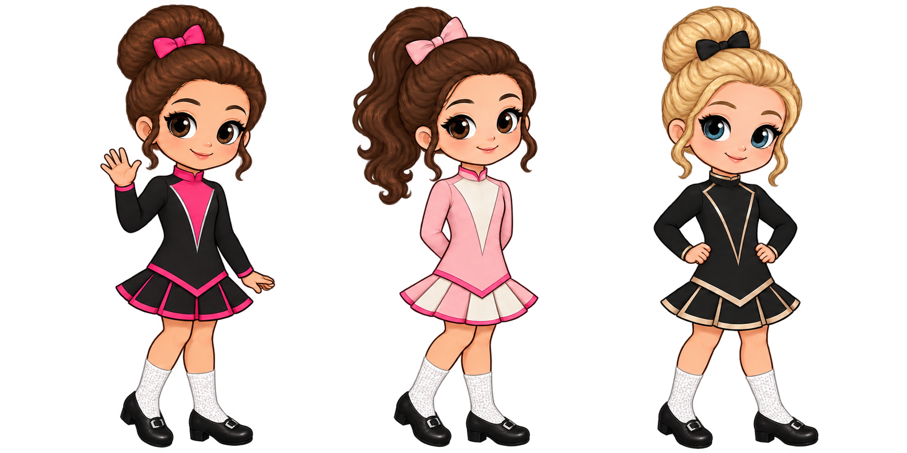
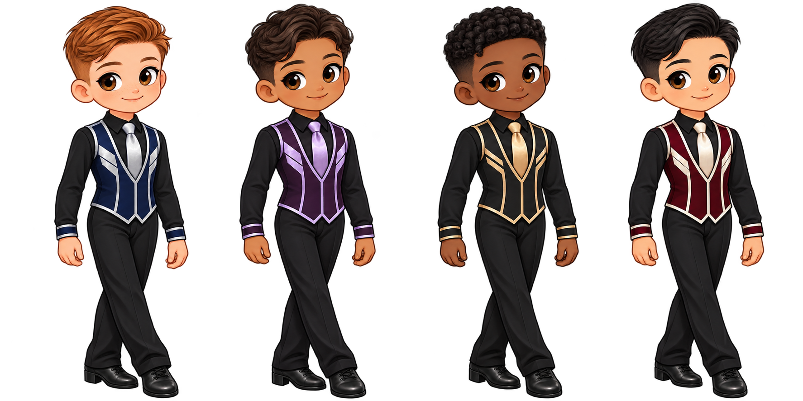

FROM THE TRAINING JOURNAL
Training Matrix
Plan your week, track sessions and reflect on your teacher’s feedback. Your notes stay in your browser.
Open Training Matrix ↗FOR DANCERS. FOR PARENTS. FOR THE LOVE OF IT.
Practical starting guides for dancers, parents and teachers. Understand the rules, prepare for competition and find a little more structure for everyday dance life.
Free to explore · No account needed · Independently made

A guide for every step of your journeyELEVEN WAYS TO FIND YOUR NEXT STEP
Choose the question that sounds like you.
Open a short guide to get started.
Ask your teacher which dance tradition and organisation your school follows. Agree what to wear for class, which shoes to buy and how practice fits around school and rest.
Before you spend: ask about trial classes, term fees, required kit, competition expectations and the school’s safeguarding contact.
A feis is a dance competition; feiseanna is the plural. Ask your teacher to confirm the correct age group, grade and dances before entering. Read the event syllabus, which is its published rules and entry information.
Save the organiser’s timetable and entry confirmation. Pack shoes, socks, costume, water and food. A recall means being invited to dance a further round, where that competition uses recalls. Marks, advancement and recalls depend on the organisation and event.
A federation or dance organisation sets rules for its own activities. Similar grade names do not guarantee equivalent levels. Start with your school’s organisation, then use the rules for your particular event.
Check age cut-off dates, grade progression, entry eligibility and costume requirements at the source. Ask your teacher before assuming advice from another organisation applies to you.
Go to official organisation websites →Start with the dress maker’s care instructions before treating a stain or replacing a gem. Check which cleaning method and adhesive suit the fabric and decoration. Keep any loose stones so they can be matched for repair.
For feis week, separate costume repairs from your packing list: dress, shoes, socks, accessories and any school-approved essentials. Ask your teacher about age and organisation rules before buying tan or other cosmetic products. Neither tan nor a wig is a universal requirement.
Ghillies are flexible, lace-up soft shoes used by many female dancers. Boys’ soft-shoe styles can differ. Heavy shoes, also called hard shoes, have sound-producing tips and heels. Your teacher will tell you which type you need and when.
Use a specialist fitting and bring the socks you dance in. Ask about fit and exchange options before buying. Follow the maker’s care advice, air shoes after use and discuss discomfort rather than treating pain as a normal part of breaking them in.
Ask the school for a list of regular and occasional costs. Separate what is required now from what might be needed later, then decide what fits your family’s budget.
Ask what can be borrowed, bought second-hand or postponed. Agree how many events are realistic before committing to a season. Costs vary by school, organisation and your dancer’s choices.
Start with one priority from your teacher’s feedback. Name the skill, choose the step or section to work on, and decide how you will recognise progress. Record a short reflection after the session.
Use the Training Matrix to organise your plan. Review it with your teacher and leave space for rest, school and other activities. More practice is not automatically better practice.
Open Training Matrix ↗A difficult result does not define a dancer. Ask whether they want to talk, have some quiet time or do something unrelated to dancing. Keep the next conversation about their experience, not only their placing.
For injury or recovery questions, use qualified clinical advice and involve the teacher in adapting participation. This hub does not diagnose injuries or prescribe a return-to-dance programme.
Irish dancing has several living traditions. Explore the music alongside the steps, and ask whose story a source is telling. A competitive solo, a stage production and a social dance are different contexts.
Begin with the Irish Traditional Music Archive for recordings, collections and research. Use the four-world guide below to keep competition customs separate from festival and social dance.
Explore the Irish Traditional Music Archive ↗Open Feis Day Spells for feis-day games. For an offline break, take turns naming something you can see that starts with each letter of the alphabet, or invent a story one sentence at a time.
Keep the waiting area and performance spaces clear, respect other dancers and follow the venue’s rules. It is fine to take a break from dance talk altogether.
Open Feis Day Spells ↗Teacher qualifications and exams belong to individual organisations. Go directly to your organisation for its current syllabus, eligibility criteria, application process and dates. Do not assume a qualification transfers automatically.
For class planning, outline the goal, activities, feedback and next step for each group. Keep safeguarding procedures and parent communication clear. This public hub never asks you to upload pupil information.
Go to official organisation websites →MADE FOR REAL DANCE LIFE
Plan your week, track sessions and reflect on your teacher’s feedback. Your notes stay in your browser.
Open Training Matrix ↗A collection of feis-day games for the wait between dancing and results.
Play Feis Day Spells ↗Training Matrix is part of Rince Hub. Plans and reflections stay in your browser on this device. Feis Day Spells opens on its own website.
A FEW DATES FOR YOUR DIARY
A small selection of annual championships, not a full competition calendar. Always confirm details with the organiser before booking.
Killarney, Ireland
Official event information ↗ WIDA · 202731 MAR–3 APRBirmingham, UK
Official event information ↗ AN CHOMHDHÁIL · 2027Date to be confirmedKillarney, Ireland
Check the organiser’s announcement ↗Sources checked 26 October 2026. Dates are a snapshot, not a live feed. Each card links to its official source.
SAME LOVE OF DANCE. DIFFERENT WORLDS.
Not always. These four worlds overlap, but their customs and expectations are not interchangeable.
Solo and team competitions with grades and rules set by dance organisations. Check the organisation behind each event.
A distinct tradition with plainer costumes and no wigs. It has its own festivals and teaching community.
Meet the festival tradition ↗Dance made for an audience, from local displays to professional productions. Casting, costume and choreography depend on the show.
Céilí includes group dances; set dancing is often danced in square formations. Sean-nós means “old style” and is an individual dance tradition. These are distinct forms, not competition grades.
GO STRAIGHT TO THE SOURCE
No ranking. No favourites.
Start with your school’s organisation.
For current rules, exams, school directories, calendars and results, use the organisation that maintains them. This is a starting selection, not an exhaustive list.

A FRIENDLIER FRONT DOOR
Rince Hub brings the questions together so you can find your way. Independent of every dance organisation, welcoming to dancers, parents and teachers, and free to explore.
Find your next step ↑